0Introduction
This is the other half of suspension design: selecting the spring rates, motion ratios, anti-roll bar rates and the rest of the parameters that set how the car rides, rolls and pitches. The goal for ARG27 is a suspension that accommodates a considerable aero package.
1Spring and Motion Ratio
1.0Methodology
- Get the vehicle design constants and the aerodynamic downforce vs speed lookup table.
- Set the driving cases to examine (g's and speed).
- Calculate the steady-state load transfer and look up the downforce to estimate the load on each tire for each driving case.
- Input initial front and rear spring rates, motion ratio, spring preload and damper offset.
- Check damper compression (bottoming out or drooping out) and ride height change.
- Iterate the spring rates, motion ratio, spring preload and damper offset.
1.1Design Constants and Aero Lookup
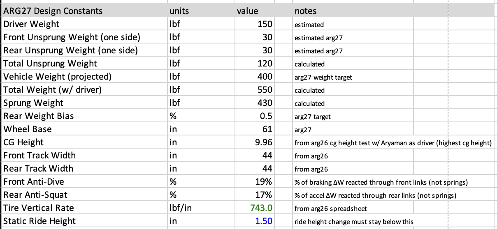
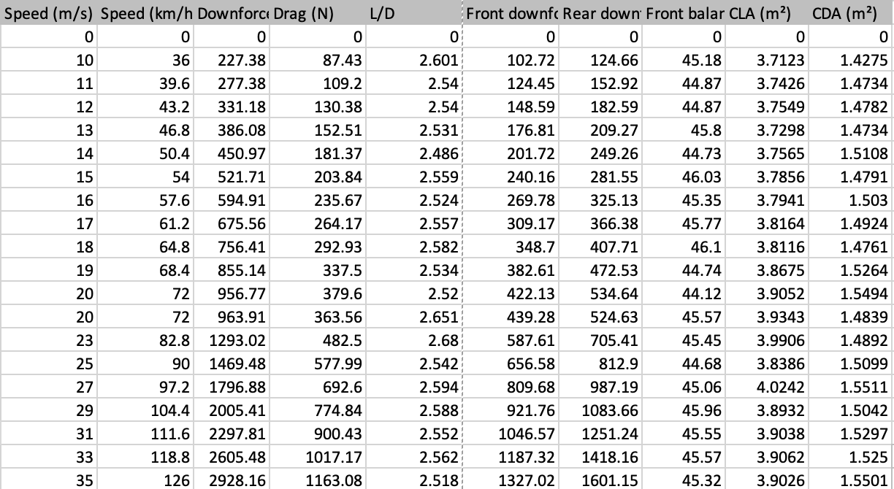
1.2Driving Cases
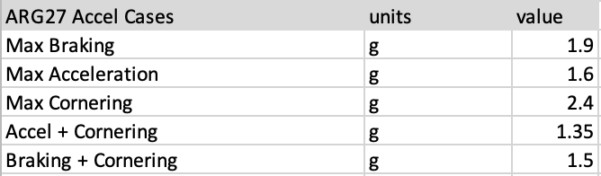
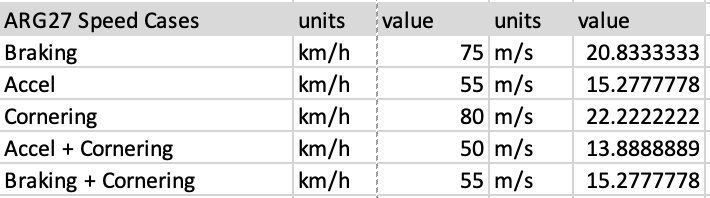
NoteThe speed cases are derived from ARG26 competition data. See the Race Data Analysis page.
1.3Tire Loads
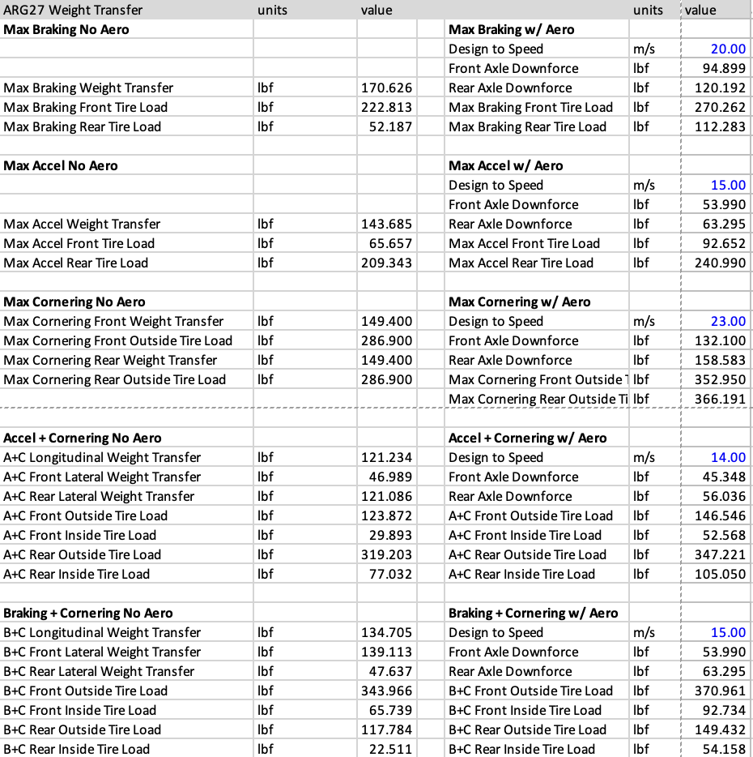
For each case, the steady-state longitudinal and lateral load transfer is added to the static load on each tire, and the axle downforce at the design speed is split evenly between the two tires on that axle. This gives the tire loads in Figure 5, which the springs and dampers have to carry.
The static loads on the front and rear axle, WF and WR, come from the total weight with driver, W, and the rear weight bias, b.
WF = W(1 − b) WR = bW
The longitudinal load transfer, ΔWX, depends on the longitudinal acceleration of the case in g, AX, the CG height, h, and the wheelbase, L.
ΔWX = W AX hL
ΔWX is added to the front axle and taken from the rear in braking, and the reverse in acceleration. This gives the axle loads after longitudinal transfer, W′F and W′R.
W′F = WF ± ΔWX W′R = WR ∓ ΔWX
The lateral load transfer on the front and rear axle, ΔWYF and ΔWYR, uses that axle's load after longitudinal transfer, the lateral acceleration of the case in g, AY, and the front and rear track widths, tF and tR. In the combined cases AX and AY both use the combined g value.
ΔWYF = W′F AY htF ΔWYR = W′R AY htR
The vertical load on a front or rear tire, FZF or FZR, is half the axle load, plus the lateral transfer on the outside tire or minus it on the inside tire, plus half the axle downforce, DFF or DFR. The downforce is read from Figure 2 at the design speed in Figure 5, and the no aero loads leave it out.
FZF = W′F2 ± ΔWYF + DFF2
FZR = W′R2 ± ΔWYR + DFR2
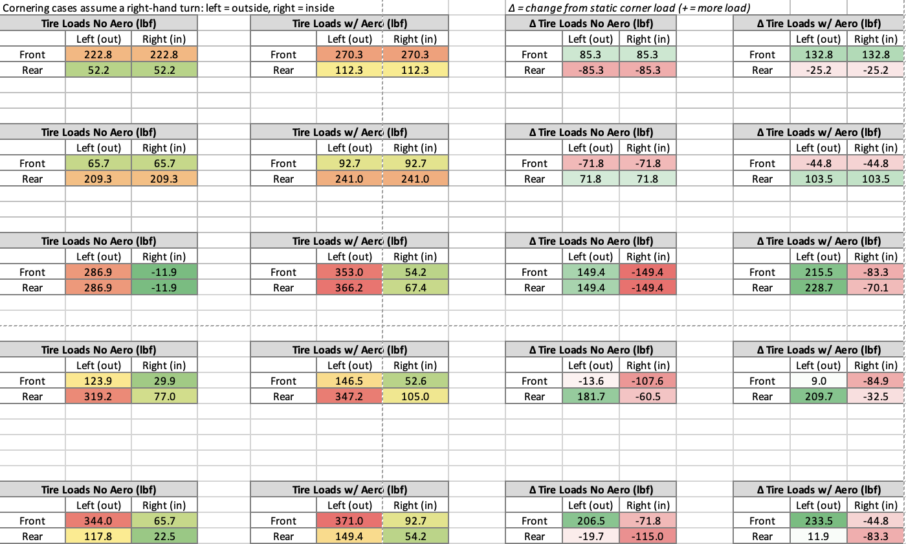
Figure 6 shows the tire loads from Figure 5 by corner, with the left tire on the outside of a right-hand turn. The right two tables show the change from the static corner load of 137.5 lbf. Sanity checks:
- The most loaded tire is the expected one: fronts in braking, rears in acceleration, outside tires in cornering.
- Without aero the deltas in each case add up to zero. With aero they add up to the total downforce.
- Without aero, max cornering gives −11.9 lbf on the inside tires, so the inside wheels would lift. The 2.4 g case only works with downforce.
- The highest load is 371.0 lbf, on the front outside tire in braking plus cornering with aero.
1.4Spring Rate and Motion Ratio
With a rocker, the spring does not act directly at the wheel. We define the motion ratio, MR, as wheel travel over spring travel, so an MR above 1 means the wheel moves more than the spring.
MR = wheel travelspring travel
The spring rate, KS, is then felt at the wheel as the wheel rate, KW.
KW = KSMR2
So the metric we care about is the wheel rate, not the spring rate, and the same wheel rate can come from different spring and motion ratio pairs. Figure 7 is a lookup table of wheel rate for each spring rate and for motion ratios from 1.00 to 1.60 in steps of 0.05. The spring rates are the Hyperco springs that fit the Öhlins TTX25 dampers, listed in Appendix C.
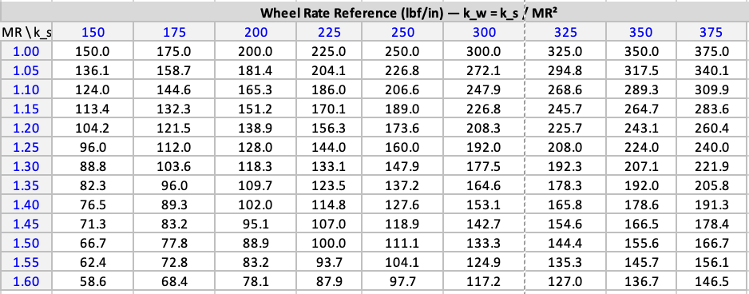
Using Figure 7, we pick an initial front and rear spring rate and motion ratio, along with the spring preload and damper offset (step 4). From these inputs the spreadsheet calculates how the car sits at rest and how much travel it has left, shown in Figure 8 for the current choice.
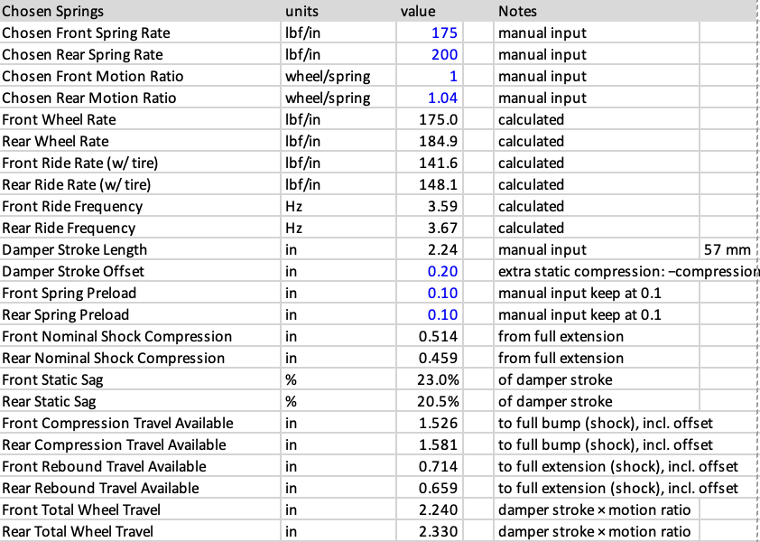
Note* Arbitrary values chosen to show the difference, not the chosen ARG27 springs.
At rest each spring carries its corner's sprung weight, WS, which is the axle load over two minus the unsprung weight of that corner. The spring compresses until it holds that load, less the preload, xP, it already had at full extension. This is the static shock compression, xS, and as a fraction of the damper stroke, s, it is the static sag.
xS = WS MRKS − xP sag = xSs
As Figure 9 shows, a softer spring sags more and the car sits lower. The damper offset, xO, is extra static compression added on top of the sag. Together they set where the damper sits in its stroke, which splits the stroke into rebound travel available (to full extension) and compression travel available (to full bump).
rebound = xS + xO compression = s − xS − xO
The soft spring leaves only 1.42 in of compression travel for downforce and bumps, so it is closer to bottoming out. The stiff spring leaves 1.78 in of compression travel but only 0.46 in of rebound, so an unloaded tire, like the inside tire in a corner, is closer to drooping out. The total wheel travel is the damper stroke times the motion ratio.
wheel travel = s × MR
Figure 10 moves the compression and rebound travel available from the shock to the wheel by multiplying by the motion ratio. This table is important at the system level: it sets the full droop and full bump positions of the wheel in CAD, which inform the dynamic CAD.
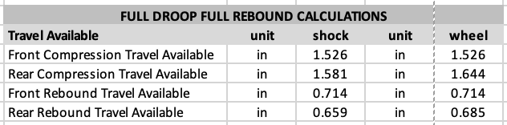
The ride rate, KR, is the wheel rate in series with the tire vertical rate, KT. The ride frequency, f, follows from the ride rate and the sprung corner weight, with g = 386.1 in/s2.
KR = KW KTKW + KT f = 12π(KR gWS)1/2
We want the front and rear ride frequencies to be different. The OptimumG tech tip in Appendix D runs the rear higher, so after a bump the rear catches up to the front and the car pitches less. Milliken lists the front higher (Appendix F, p. 605), so the two sources disagree on which end. Both should also fall within Milliken’s suggested range for aero cars, 3.0 to 5.0 Hz (p. 605). Combination 1 gives 3.59 Hz front and 3.67 Hz rear, with the rear higher and both inside the range.
1.5Compression and Ride Height Check
With the springs set, we can check how far the tires, shocks and chassis move in each driving case. Figure 11 shows the change from static for each corner with aero.
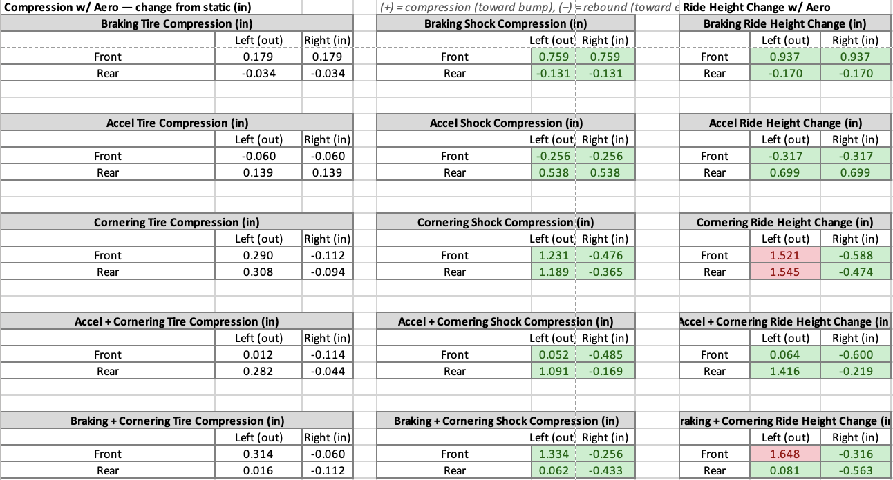
The change in load on a tire, ΔFZ, is its load with aero from Figure 5 minus its static corner load, which is half the static axle load.
ΔFZF = FZF − WF2 ΔFZR = FZR − WR2
The tire compression, ΔzT, is that load change over the tire vertical rate, KT.
ΔzT = ΔFZKT
The spring sees the load change multiplied by the motion ratio, MR, so the shock compression, Δx, is that force over the spring rate, KS.
Δx = ΔFZ MRKS
The ride height change, Δh, is the shock compression moved to the wheel plus the tire compression.
Δh = Δx MR + ΔzT
A shock value is green when it stays within the travel available in Figure 10. A ride height change is green when it stays below the 1.5 in static ride height, and red when the chassis would reach the ground. Three cases are red: the outside tires in max cornering and the front outside tire in braking plus cornering.
1.6Chosen Combination
Figure 12 reformats the work above so all the inputs and outputs for one spring combination are in one place. On the left are the springs, motion ratios, preload, offset and the resulting metrics from Figure 8. On the right, the largest shock change and ride height change in each case are checked against a fail limit: the travel available in Figure 10 for the shock, and the 1.5 in static ride height for the ride height. The margin to fail is the limit minus the value, and N/A means the check does not apply because rebound moves the chassis away from the ground. The far right columns give the same shock changes at the wheel.
Copying this sheet lets us run and compare multiple combinations. Combination 1 is the one chosen for the ARG27 suspension.
Combination 1 fails two ride height checks: cornering compression by 0.045 in and braking plus cornering compression by 0.148 in. We accept these because they are ride height checks with a very small margin to fail, the calculations are conservative, and the ride height can be raised if needed.
Combinations 2 to 4 (Figures 13 to 15) run stiffer springs, up to 250 lbf/in front and 300 lbf/in rear, and pass every check. This shows we can move to stiffer springs if needed.
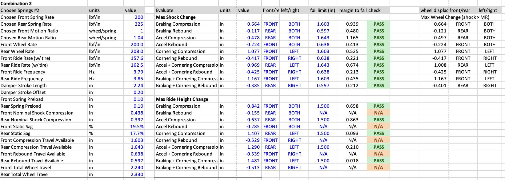
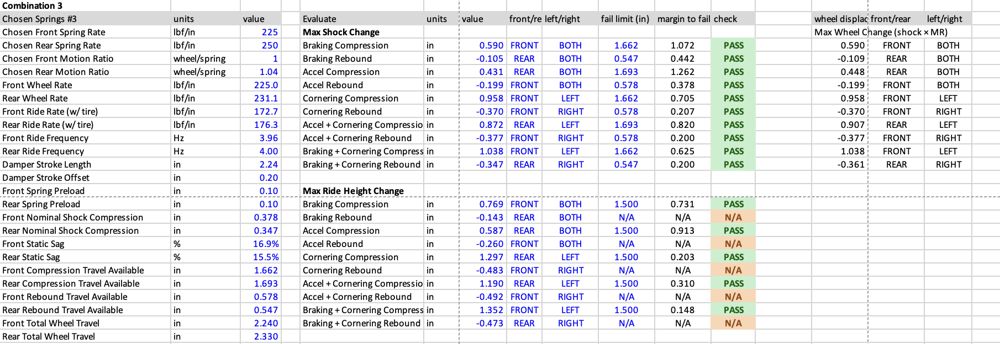
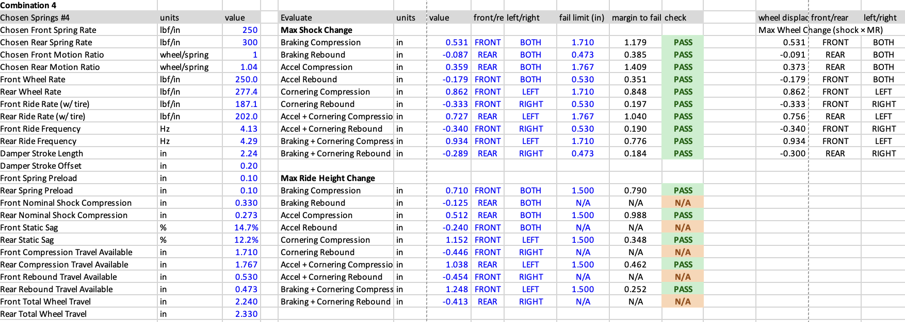
2Roll Rates
With the spring rates and motion ratios chosen, we know the wheel rates. From the wheel rates we can calculate how much the car rolls in a corner, and so what anti-roll bar stiffnesses we need.
The equations in this section follow Milliken, Race Car Vehicle Dynamics, Chapter 18, and use its variable names. Figure 16 shows the geometry they refer to.
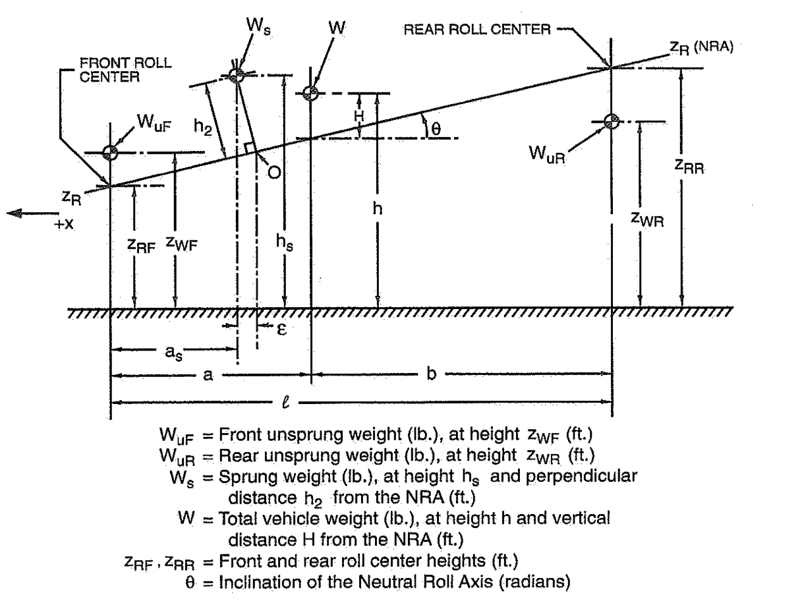
The car rolls about the neutral roll axis (NRA), the line joining the front and rear roll centers (p. 680). Only the sprung weight, Ws, rolls on the springs. The unsprung weights, WuF and WuR, sit at the wheel centers and do not roll.
2.1Design Constants
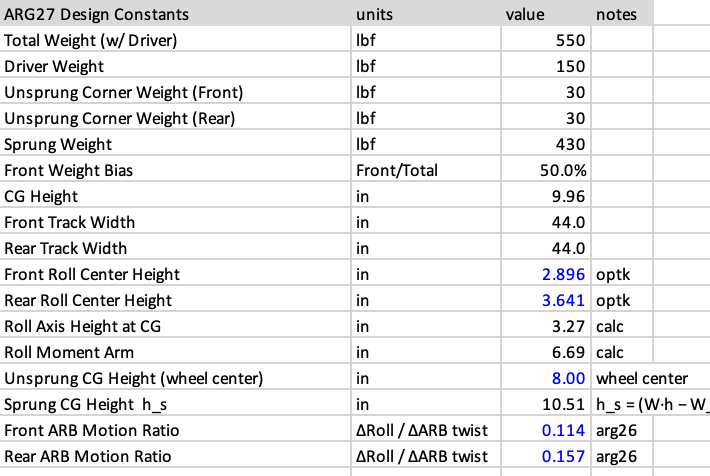
The weights, weight bias, CG height and track widths carry over from Figure 1. The blue values are new inputs: the front and rear roll center heights, zRF and zRR, come from the kinematics in OptimumKinematics, the unsprung CG heights, zWF and zWR, are taken at the wheel center, and the ARB motion ratios carry over from ARG26. The rest are calculated.
The sprung weight is the total weight with driver, W, minus the four unsprung corner weights (p. 671). WuF and WuR are the totals for both sides of each axle (p. 672), so each is twice the corner weight in Figure 17.
Ws = W − WuF − WuR
The height of the NRA under the CG, zRCG, is found by moving along the axis from the front roll center to the CG, which sits a distance a behind the front axle on a wheelbase ℓ. This is the same interpolation Milliken uses for the wheel center height at the CG (p. 670). With equal front and rear weight, a/ℓ = 0.5.
zRCG = zRF + aℓ(zRR − zRF)
The roll moment arm, H, is the vertical distance from the NRA up to the total vehicle CG at height h (Figure 16, p. 681). In a corner the lateral force acts at the CG, so the longer this arm, the more the car rolls.
H = h − zRCG
The sprung CG height, hs, is found by taking moments about the ground and removing the unsprung weight (p. 672). Milliken writes the unsprung heights as the loaded radii, RLF and RLR, which are the wheel center heights zWF and zWR in Figure 16.
hs = WWsh − WuFWszWF − WuRWszWR
The sprung CG sits above the overall CG because the unsprung weight is low, at the wheel centers. Its perpendicular distance from the NRA, h2, is the sprung weight's roll moment arm (Figure 16, p. 681). For a nearly level roll axis it is close to the vertical distance.
h2 ≈ hs − zRCG
2.2Tire Roll Stiffness
The tires are springs too, so they add some roll on their own before the suspension does anything. Milliken includes the tire deflection in the front and rear roll rates (p. 680). Figure 18 finds how much the tires contribute.
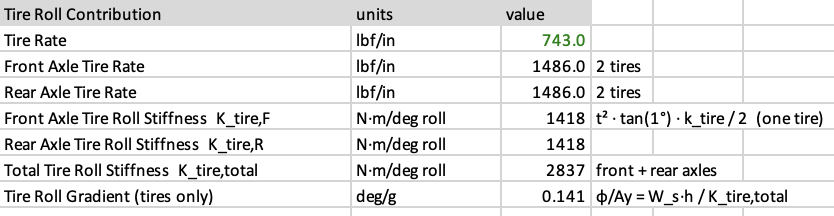
Each axle has two tires, each with the tire vertical rate KT, so the axle tire rate is twice the tire rate.
KT,axle = 2KT
When the car rolls 1°, the outside tire compresses and the inside tire extends by half the track width times tan(1°). Each tire pushes back with KT times that distance, acting half a track width from the center of the car. Adding the two tires gives the axle tire roll stiffness, KF,tire or KR,tire, the moment needed to roll the axle 1°. Milliken covers roll rates in Chapter 16 (p. 680).
KF,tire = tF2 tan(1°) KT2 KR,tire = tR2 tan(1°) KT2
With the track in in and KT in lbf/in, this is in lbf·in per degree. Dividing by 12 and multiplying by 1.3558 gives N·m per degree. The front and rear axles resist roll together, so the total is their sum.
Ktire,total = KF,tire + KR,tire
The roll gradient, or roll sensitivity, is how many degrees the car rolls per g of lateral acceleration, AY. Milliken sets the sprung weight's roll moment equal to the roll stiffness moment, with KF and KR the front and rear roll rates (p. 682).
φAY = −Wsh2KF + KR − Wsh2
The Wsh2 term in the denominator is gravity acting on the rolled sprung mass and can be neglected for small roll angles (p. 681). Using the total vehicle CG and its height above the NRA, H, simplifies this to (p. 683):
φAY = −WHKF + KR
The minus sign means the car rolls to the outside of the turn, so we quote the magnitude. Milliken's roll rates are per radian, which gives the roll gradient in radians per g (p. 683). With the roll rates per degree, as in Figure 18, it comes out in degrees per g. The spreadsheet uses the simplified form with the sprung weight in place of W, since only the sprung weight rolls on the springs. For the tires alone, KF and KR are KF,tire and KR,tire.
φAY = WsHKF,tire + KR,tire
2.3Spring Roll Stiffness
Next we take the spring rates and motion ratios chosen in Section 1 and find how much roll the springs resist on their own. Figure 19 uses Combination 1.
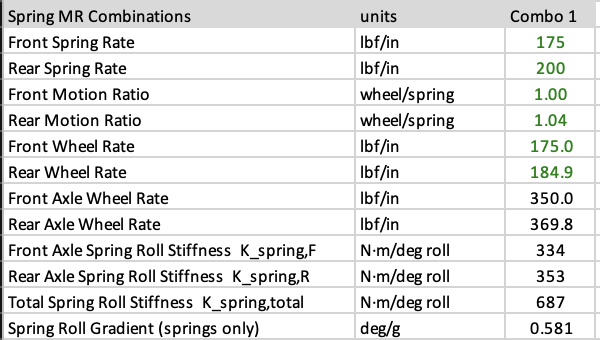
The front and rear wheel rates, KWF and KWR, come from Section 1.4, with each spring rate, KS, moved to the wheel by that axle’s motion ratio.
KW = KSMR2
As with the tires, each axle has two wheels, so the axle wheel rate is twice the wheel rate.
KWF,axle = 2KWF KWR,axle = 2KWR
The springs resist roll the same way the tires do, so the axle spring roll stiffness uses the same equation as Section 2.2 with the wheel rate in place of the tire rate.
KF,spring = tF2 tan(1°) KWF2 KR,spring = tR2 tan(1°) KWR2
Kspring,total = KF,spring + KR,spring
The roll gradient from the springs alone uses the same equation as the tires, with KF,spring and KR,spring as the roll rates.
φAY = WsHKF,spring + KR,spring
2.4ARB Sizing
Now we size the anti-roll bars (ARBs). We do not know the roll gradient we want yet, so we start with a sweep of desired total roll gradients from 0.25 to 1.00 deg/g and find the ARB rates each one needs. The other input is a target front lateral load transfer distribution (LLTD) of 48%, which sets how the ARB rate is split front to rear.
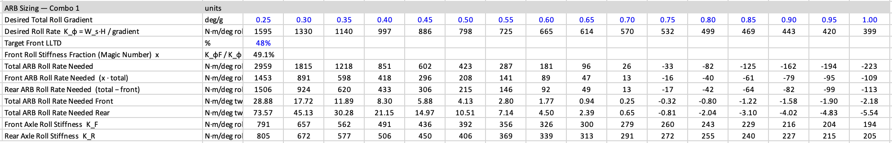
For each roll gradient, the total roll rate the car needs, KF + KR, comes from rearranging the roll sensitivity equation in Section 2.2 (p. 683, with Ws in place of W).
KF + KR = WsHφ/AY
The springs and ARBs act side by side, so their roll rates add. The tires are in series with both of them, since the roll moment passes through the suspension and then the tires. Lumping the whole car together:
1KF + KR = 1Ktire,total + 1Kspring,total + KARB
Solving for the total ARB roll rate needed, KARB:
KARB = (KF + KR) Ktire,totalKtire,total − (KF + KR) − Kspring,total
The ARB rate is split front to rear by the front roll stiffness fraction, x, sometimes called the magic number. It is the share of the total roll rate carried by the front axle, and it is found from the target front LLTD (derived in Section 2.5). Here b/ℓ is the front weight fraction, 0.5.
x = KFKF + KR = LLTDF h − (b/ℓ) zRFH
KF,ARB = x KARB KR,ARB = KARB − KF,ARB
These are roll rates at the wheels. The bar itself twists less than the car rolls. The ARB motion ratio in Figure 17, MRARB, is the roll angle over the bar twist angle. Setting the work done in roll equal to the work done twisting the bar gives the torsional rate the bar needs, in N·m per degree of twist.
KF,bar = KF,ARB MRARB,F2 KR,bar = KR,ARB MRARB,R2
Finally, each axle's roll rate is its spring and ARB rates in series with its tires.
KF = (KF,spring + KF,ARB) KF,tireKF,spring + KF,ARB + KF,tire KR = (KR,spring + KR,ARB) KR,tireKR,spring + KR,ARB + KR,tire
As a check, KF + KR comes back to the desired roll rate: at 0.25 deg/g, KF + KR = 1595.3 N·m/deg against the desired 1595.5. Past 0.70 deg/g the ARB rates turn negative, which means the springs and tires alone already hold the car to that roll gradient and no ARB is needed.
2.5LLTD Range
The ARBs will be adjustable, so instead of one roll gradient we pick a range we want to be able to tune across. We input a minimum and maximum roll gradient, 0.55 and 0.70 deg/g, and look up the front and rear axle roll rates at each from Figure 20.
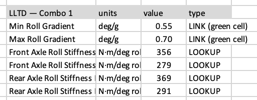
The front LLTD is the share of the total lateral load transfer that happens at the front axle. Milliken calls it the total lateral load transfer distribution, TLLTD (p. 679). The softest front with the stiffest rear gives the lowest front LLTD, and the stiffest front with the softest rear gives the highest. Figure 22 shows the two ends of the range.
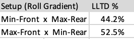
The front LLTD is found from Milliken's front lateral load transfer equation (p. 682) divided by the total lateral load transfer (p. 679), with x = KF / (KF + KR) and bs the distance from the sprung CG to the rear axle (p. 672).
LLTDF = Ws [ h2 x + (bs/ℓ) zRF ] + WuF zWFW h
For ARG27 the sprung CG is at the middle of the wheelbase, so bs/ℓ = 0.5 and the NRA height under the sprung CG is the average of the two roll center heights. This is the form the spreadsheet uses.
LLTDF = Ws [ (hs − ½(zRF + zRR)) x + ½zRF ] + WuF zWFW h
Show derivation
Milliken gives the front and rear lateral load transfer per g of lateral acceleration (p. 682), with KF and KR the front and rear roll rates and as the distance from the front axle to the sprung CG:
ΔWFAY = WstF[ h2KF′KF + KR − Wsh2 + ℓ − asℓzRF ] + WuFtFzWF
ΔWRAY = WstR[ h2KR′KF + KR − Wsh2 + asℓzRR ] + WuRtRzWR
where KF′ = KF − (ℓ − as)Wsh2/ℓ and KR′ = KR − asWsh2/ℓ. The Wsh2 terms are the gravity term from the rolled sprung mass, which can be neglected (p. 682). Then KF′ ≈ KF, KR′ ≈ KR, and the first term in each bracket becomes h2x for the front and h2(1 − x) for the rear. With ℓ − as = bs (p. 672):
ΔWFAY = WstF[ h2x + bsℓzRF ] + WuFtFzWF
The total lateral load transfer, from moments about the outside tire contact patch, is (p. 679):
ΔWAY = W ht
This matches the sum of ΔWF and ΔWR when the tracks are equal: the h2 terms add to Wsh2, the roll center terms add to Ws times the NRA height under the sprung CG, which together give Wshs, and Wshs + WuFzWF + WuRzWR = W h by the sprung CG height equation (p. 672).
The front LLTD is the front load transfer over the total. ARG27 has equal tracks, tF = tR = t, so t cancels:
LLTDF = ΔWFΔW = Ws [ h2 x + (bs/ℓ) zRF ] + WuF zWFW h
For the magic number in Section 2.4, Milliken's simplified single mass form is used instead (p. 683), with WuF ≈ WuR ≈ 0, Ws ≈ W, h2 ≈ H and as ≈ a:
ΔWFAY = WtF[ HKFKF + KR + bℓzRF ]
Dividing by W h/t gives LLTDF = [Hx + (b/ℓ)zRF] / h, and solving for x:
x = LLTDF h − (b/ℓ) zRFH
With the roll gradient tuned between 0.55 and 0.70 deg/g, the front LLTD can be set anywhere from 44.2% to 52.5%, which brackets the 48% target.
Figure 23 shows why we want a difference between the front and rear roll center heights. Holding the average roll center height and the springs and ARBs fixed, raising the rear roll center above the front lowers the front LLTD by about 2% per inch, and lowering it does the reverse. The width of the range does not change. So the roll center difference sets where the LLTD range sits, and the ARBs tune within it.
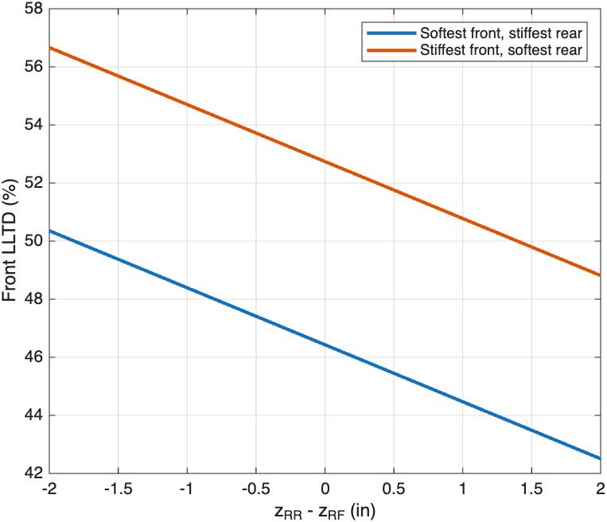
Show MATLAB code
% Front LLTD range vs roll center height difference, ARG27 constants
W = 550; Ws = 430; % total and sprung weight, lbf
WuF = 60; zWF = 8; % front unsprung weight (both sides) and height, in
h = 9.96; hs = 10.51; % CG and sprung CG height, in
zAvg = (2.896 + 3.641)/2; % average roll center height, held constant, in
xMin = 0.437; xMax = 0.548; % front roll stiffness fraction K_F/(K_F+K_R), softest and stiffest front
dz = linspace(-2, 2, 41); % z_RR - z_RF, in
zRF = zAvg - dz/2;
zRR = zAvg + dz/2;
LLTD = @(x) 100*(Ws*((hs - (zRF + zRR)/2)*x + zRF/2) + WuF*zWF)/(W*h);
plot(dz, LLTD(xMin), dz, LLTD(xMax), 'LineWidth', 2)
grid on
xlabel('z_{RR} - z_{RF} (in)')
ylabel('Front LLTD (%)')
legend('Softest front, stiffest rear', 'Stiffest front, softest rear')3Understeer and Oversteer
Understeer is when the front tires reach their grip limit first and the car turns less than the driver asks. Oversteer is when the rear tires reach it first and the car turns more. Moving more of the lateral load transfer to the front axle takes grip away from the front tires and pushes the car toward understeer.
Milliken suggests a front TLLTD 5% above the front weight distribution to make sure of initial understeer (Appendix F, p. 605). With ARG27’s 50% front weight, that is a front TLLTD of 55%.
AAppendix: ARG26 Parameters Spreadsheet
The ARG26 values come from the ARG26 suspension parameters spreadsheet (Excel).
BAppendix: Öhlins TTX25 MKII Dampers
ARG26 runs Öhlins TTX25 MKII FSAE dampers. Main details:
- Twin-tube damper, four-way externally adjustable
- Stroke of 57 mm (2.24 in)
- Length of 200 mm between bearing centers, fully extended
- Weight of 394 g without the spring
- Spherical bearings with 8 mm ID, 8 mm ball width and 15 mm OD
- Takes Hyperco springs, sold through dealers such as Essex Racing and KAZ Technologies
- Rebuild kit for a full car set and revalve kits with different high speed valve springs
- Dyno plots, CAD models, a workshop manual, spring dimensions and service tools on the Öhlins page
CAppendix: Available Hyperco Springs
These are the Hyperco standard coilover springs with a 1.45 in inside diameter and 4.4 in free length, the size used on the TTX25. The spring sweep in the methodology uses these rates.
| Part number | Rate (lbf/in) | Max deflection (in) | Load at max deflection (lb) | Outside diameter (in) | Solid height (in) |
|---|---|---|---|---|---|
| 18FS150 | 150 | 3.052 | 457 | 2.224 | 1.348 |
| 18FS175 | 175 | 2.981 | 521 | 2.259 | 1.419 |
| 18FS200 | 200 | 2.913 | 582 | 2.233 | 1.487 |
| 18FS225 | 225 | 2.858 | 643 | 2.307 | 1.542 |
| 18FS250 | 250 | 2.636 | 658 | 2.128 | 1.764 |
| 18FS300 | 300 | 2.583 | 775 | 2.095 | 1.817 |
| 18FS350 | 350 | 2.491 | 871 | 2.108 | 1.909 |
| 18FS400 | 400 | 2.417 | 966 | 2.126 | 1.983 |
DAppendix: OptimumG Springs and Dampers Tech Tip
From the OptimumG Springs and Dampers Tech Tip (PDF). With a higher rear ride frequency, the rear catches up to the front after a bump, so the two ends move together and the car pitches less.
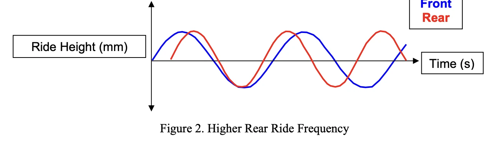
EAppendix: OptimumG Geometric and Elastic Load Transfer
From the OptimumG September 2021 newsletter (PDF). The sprung mass load transfer splits into a geometric part, which acts through the roll center and does not roll the car, and an elastic part, which acts through the distance from the roll center up to the sprung CG and goes through the springs and ARBs.
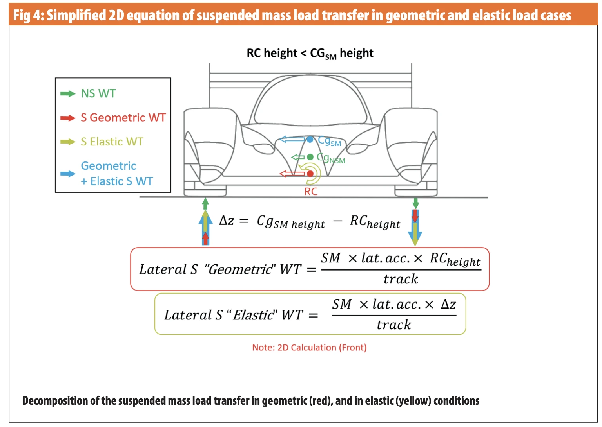
FAppendix: Milliken Suggested Numbers
Milliken’s suggested ride frequencies, roll gradients and TLLTD for the simplified method of picking suspension rates.
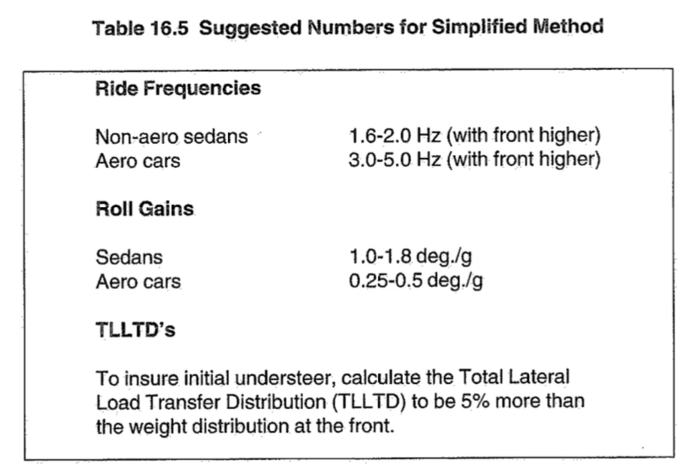